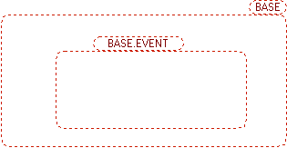
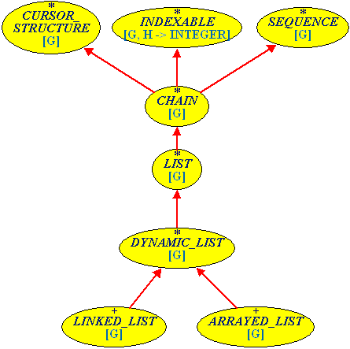

Contexts
A diagram in the diagram tool is always the context of a certain class or cluster. Context means the direct relations up to a certain depth.
For clusters, the relations are:
- subclusters
- superclusters
The image below shows the cluster base.event with the relation depth for superclusters 1 and subclusters zero.

The relations for classes are:
- ancestors
- descendants
- clients
- suppliers
This is an example of the class LIST, with ancestor depth 2, descendant depth 2 and both client and supplier depth zero.
